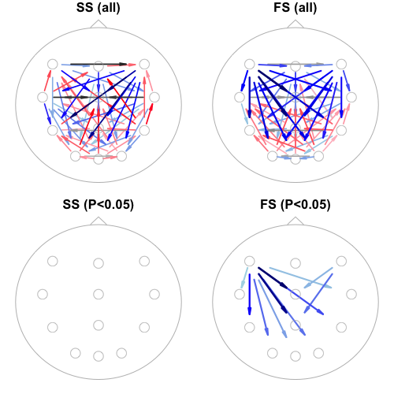

5.10. Interval-based analyses
In this final section, we consider analyses of event-level data (i.e. annotations rather than signals), using Luna's OVERLAP command. Specifically, we focus on (fast and slow) spindles detected by the SPINDLES command.
Applying OVERLAP in different contexts
Although we focus on spindle events here, the OVERLAP command is
completely generic: the events could be other features derived from
the EEG, from cardiac activity or respiratory events, etc, or even
fixed exposures such as experimental manipulations. The OVERLAP command
provides several options that allow fine-grained control over how events are
handled in the randomization procedure, as appropriate for different contexts.
Using both single- and multiple-individual approaches, we address two classes of question:
-
how are fast and slow spindles temporally related to each other?
-
how do (fast or slow) spindles propagate at the sensor-level?
To simplify the presentation of results (and speed up analysis a little), we'll only use a subset of twelve channels:
F5----FZ----F6
| | |
C5----CZ----C6
| | |
P5----PZ----P6
\ | /
O1---OZ---O2
Generating event data
We'll make a folder to store detected spindle events (as .annot files):
mkdir work/spindles
We'll then run SPINDLES for these 12 channels a) restricted to N2
sleep, b) after a round of epoch-level artifact rejection, c)
separately for slow (fc=11) and fast (fc=15) spindles, d) adding
annotations (labeled SP11 and SP15 respectively) based on the
detected events to the in-memory dataset, and e) saving those new
spindle-event annotations to .annot files in the new
work/spindles/ folder:
luna c.lst -o out/overlap-spindles.db \
-s ' ${s=F5,FZ,F6,C5,CZ,C6,P5,PZ,P6,O1,OZ,O2}
MASK ifnot=N2 & RE
CHEP-MASK sig=${s} ep-th=3,3
CHEP sig=${s} epochs & RE
SPINDLES sig=${s} fc=11 annot=SP11
SPINDLES sig=${s} fc=15 annot=SP15
WRITE-ANNOTS annot=SP11,SP15,N2 specials file=work/spindles/^.annot '
Note that we've added the specials option to WRITE-ANNOTS to get
duration_sec annotations in the exported files, which is necessary
for some of the multi-individual approaches below. We also export
N2 annotations as well as the generated spindle annotations in each
file, as this will be used as the background (i.e. to constrain
shuffling only to periods that could have had a spindle event).
Unlike most previous analyses presented in this walkthrough, here we
are not primarily interested in the out/overlap-spindles.db output.
Rather, our focus is on the event/annotation file(s) generated in
work/spindles/, e.g.:
head work/spindles/F01.annot
class instance channel start stop meta
start_hms 22.00.00 . . . .
duration_hms 07.01.57 . . . .
duration_sec 25317 . . . .
epoch_sec 30 . . . .
N2 N2 . 2490.000 2520.000 .
N2 N2 . 2520.000 2550.000 .
N2 N2 . 2550.000 2580.000 .
N2 N2 . 2580.000 2610.000 .
N2 N2 . 2610.000 2640.000 .
N2 N2 . 2640.000 2670.000 .
SP15 15 OZ 2640.266 2640.969 amp=22.8214;dur=0.703125;frq=14.2222;isa=0.891995;rp_mid=0.786517
SP15 15 O1 2640.281 2640.969 amp=21.5774;dur=0.6875;frq=13.8182;isa=0.897088;rp_mid=0.781609
SP15 15 P5 2640.289 2640.969 amp=31.3933;dur=0.679688;frq=13.2414;isa=0.878222;rp_mid=0.77907
SP15 15 FZ 2643.742 2644.508 amp=56.1651;dur=0.765625;frq=13.7143;isa=3.02084;rp_mid=0.43299
SP15 15 CZ 2643.742 2644.641 amp=70.4011;dur=0.898438;frq=14.4696;isa=2.85374;rp_mid=0.368421
...
The first few items are generated by the specials option as noted
above (as a duration_sec annotation containing the duration of the
total recording in seconds as the instance ID is needed in some steps
below). We also see N2 annotations, which are then interleaved with
detected spindles (of 9792 events for this individual listed in
F01.annot).
Spindles start about 45 minutes after the EDF start (i.e. 2640
seconds). Considering the full file, there are two unique class
labels (SP15 and SP11) for fast and slow spindles respectively;
the instance ID field (second column lists the target frequency,
similarly either 11 or 15 here, but we can ignore this field for these
analyses, i.e. it could be blank, .). The channel each spindle
was detected on is listed in the third column, followed by the start
and stop times in seconds. Finally, when generating annotations
(from the annot flag), the SPINDLES command adds a few metrics to
describe the event, using the .annot format for meta-information
(namely ;-delimited key=value pairs), such as amplitude (amp),
duration (dur) and frequency (frq).
Importantly for these analyses, it also outputs rp_mid (you may have
to scroll the above box horizontally to see it) which is a number
between 0.0 and 1.0 that gives the relative position at which
spindle activity was greatest, i.e. the spindle "peak", which will
typically be around the middle of the event (given characteristic
waxing and waning spindle morphology) but not necessarily exactly at
the temporal midpoint (i.e. halfway between start and stop). The
OVERLAP command can be instructed to use the rp_mid information to
align "when" spindles occur, i.e. to perform analyses based on spindle
"peaks" rather than whole intervals based on start/stop times.
Single-subject analysis
We'll first restrict analysis to a single individual, F01, passing the
newly-generated spindle events in work/spindles/F01.annot by adding the
annot-file special variable and selecting id=F01:
luna c.lst id=F01 -o out/overlap-F01-1.db \
annot-file=work/spindles/F01.annot \
-s ' OVERLAP seed=SP11,SP15 nreps=100 bg=N2 seed-seed=T '
What does this OVERLAP command do? It essentially tests for above-chance levels
of overlap, proximity and temporal ordering of events, based on an
empirical approach that randomly shuffles annotations, creating many null
(surrogate) datasets. See the main
documentation
for a fuller description. The other options do the following:
-
seedmeans we specify spindle events (as annotations have labelsSP11andSP15) as the seeds, namely the class of events that are shuffled and quantified -
nreps=100means we request 100 random annotation datasets to be generated -
bg=N2means we constrain the shuffling and counting of events only to intervals spanned by anN2annotation. We know that spindles could only have been detected during N2 sleep (as we masked all non-N2 periods) and therefore when creating randomly shuffled data, we cannot place a spindle outside of that region. That is,bgmeans background and it is the denominator against which all events occur. (Note: in this instance,N2annotations would have been available via the attached stage annotation file specified inc.lsteven if we hadn't exported them explicitly into the new.annotfile; here they will be duplictaed but that doesn't matter, as the background is flattened, meaning all overlapping events are merged). -
seed-seed=Tmeans to assess the overlap, etc between different events of the same seed class; becauseOVERLAPcan be run in different modes (specifying other classes of annotation that are held constant, etc), by default it would not analyze intra-seed overlap (and thus give no output here)
Contexts for running OVERLAP
Note that OVERLAP doesn't really consider
signal (EDF) data at all, except for needing to know the total
duration of the recording (which is why we extracted duration_sec above,
as in some analyses below we won't pass any EDFs to Luna at all.)
Also note, we could have run OVERLAP in first script above, i.e. after SPINDLES and
in place of WRITE-ANNOTS. That is, this
single-subject variant of OVERLAP doesn't expect the
annotations to be in a file per se, they just need to be internally
available as part of the attached dataset.
Looking at the console log, some of the most relevant lines include:
registered 9792 intervals across 24 annotation classes, including 24 seed(s)
0 events fell outside of the background and were rejected
SP11_C1 [seed] : n = 187 of 187 , mins = 2.77142 , avg. dur (s) = 0.889225
SP11_C5 [seed] : n = 211 of 211 , mins = 2.9078 , avg. dur (s) = 0.826863
SP11_CZ [seed] : n = 183 of 183 , mins = 2.74632 , avg. dur (s) = 0.900432
SP11_F1 [seed] : n = 238 of 238 , mins = 3.5384 , avg. dur (s) = 0.892034
...
which breaks down the number of events of each class/channel. Note that, by default, Luna has made unique class labels that appended the channel label too. (It is also possible to pool all similar events across channels, but we won't consider that option here.) We then see:
unconstrained shuffling within each contiguous background interval
.......... .......... .......... .......... .......... 50 of 100 replicates done
.......... .......... .......... .......... .......... 100 of 100 replicates done
In larger datasets, this randomization step slows (which is also why here we request only 100 replicates as opposed to the default 1000).
There are two output tables generated by this run:
destrat out/overlap-F01-1.db
commands : factors : levels : variables
----------------:-------------------:---------------:---------------------------
[OVERLAP] : SEED OTHERS : 24 level(s) : N_EXP N_OBS
: : :
[OVERLAP] : SEED OTHER : 552 level(s) : D1_EXP D1_OBS D1_P D1_Z D2_EXP
: : : D2_OBS D2_P D2_Z D_N D_N_EXP N_EXP
: : : N_OBS N_P N_Z
----------------:-------------------:---------------:---------------------------
For these analyses, only the second (SEED x OTHER) table is
relevant. It contains 522 rows, which reflects the pairwise contrast
of every spindle class/channel (i.e. 2 * 12 = 24 ) by every other
class/channel (i.e. 24 * 23 = 522). We'll pull out a single row of
output (piped via behead for easier reading), comparing fast spindles at
OZ with fast spindles at FZ:
destrat out/overlap-F01-1.db +OVERLAP -r SEED/SP15_OZ OTHER/SP15_FZ | behead
ID F01
OTHER SP15_FZ
SEED SP15_OZ
D1_EXP 6.03385407363597
D1_OBS 2.70746153877979
D1_P 0.0099009900990099
D1_Z -13.7468371671407
D2_EXP 0.00353838272537311
D2_OBS 0.004739336492891
D2_P 0.920792079207921
D2_Z 0.0196738469550649
D_N 663
D_N_EXP 663
N_EXP 55.83
N_OBS 359
N_P 0.0099009900990099
N_Z 24.3699882500393
OTHER_ANNOT SP15
OTHER_CH FZ
SEED_ANNOT SP15
SEED_CH OZ
Briefly,
-
D1statistics reflect the average absolute proximity of the seed to the nearest other annotation (up to 10 seconds away, by default) -
D2statistics reflect the average signed time difference between the seed to the nearest other annotation (where negative values implies the seed tends to precede the other event) -
Nstatistics reflect the count of seed-other overlap
In each case, _OBS indicates the value for that metric that was
observed in the real data; _EXP indicates the average for that
statistic from the 100 randomized datasets. Based on the random data,
the _P and _Z statistics reflect the (one-sided) empirical p-value
and Z score (based on the null replicate mean and standard deviation)
associated with the observed statistic.
In other words, seeding on fast spindles at OZ and asking about their temporal relationship to fast spindles at FZ:
-
there is significant overlap in events: whereas we'd expect only 57.3 OZ spindles to have an overlapping FZ spindle by chance, we see 372, which is significantly (empirical P < 0.01 based on 100 replicates) more than expected by chance (Z score > 40 SD units)
-
the mean absolute time to the nearest FZ spindle (including those that overlap) is 2.7 seconds, whereas by chance it would be almost 6 seconds, which is significantly different from chance, suggesting spindles are temporally clustered
-
based on this analysis, there is no suggestion that OZ spindles typically precede versus follow FZ spindles: the observed
D2statistic (0.01 seconds) is not significantly different from chance expectation (0.02 seconds)
Fine-tuning parameters
To further flesh out some of the options of OVERLAP, we'll fine-tune
parameters controlling how events are defined, shuffled and counted.
The optimal parameters will likely depend on the nature of the data
and question being asked. As noted, OVERLAP is a completely generic
event-based command: it does not assume the events are spindles, or on
the order of 1 second, etc..
To simplify this step, we'll first constrain these analyses to the relationship between fast and slow spindles occurring within the same EEG channel. That is, whereas the prior analysis considered all 552 combinations of channel and spindle type, here we will only consider 24 pairs of results (i.e. fast-slow and slow-fast seed-other pairs, for each of the 12 channel).
We expect that the reciprocal pairs (whether fast or slow spindles are the seed annotation) should usually give similar results, although they will not be numerically identical due to a) randomization being performed separately for each seed by default and b) asymmetries in the number of each event.
We'll stick to the same F01 individual for now:
luna c.lst id=F01 -o out/overlap-F01-2.db \
annot-file=work/spindles/F01.annot \
-s ' OVERLAP seed=SP11,SP15 bg=N2 nreps=100 seed-seed=T \
within-channel dist-excludes-overlapping=T midpoint '
We've added a few additional options here (note, the order in which we list them after OVERLAP is not important;
also, we're using \ to split the long list of options for a single Luna command here.):
-
within-channeltells Luna to only consider seed-other pairs that belong to the same channel -
dist-excludes-overlapping=Ttells Luna to exclude overlapping events from theD1andD2calculations (e.g. here, if detected fast and slow spindles overlapped, implying an intermediate frequency spindle that was detected under both conditions) -
midpointtells Luna to use the 0-duration midpoint (i.e. halfway between the start and the stop) as the definition of that spindle; because of this, there will be fewer overlapping events -- in fact, the overlap statistics become meaningless in this case, also meaning that the abovedist-excludes-overlapping=Toption is probably not necessary either, as two spindles will overlap only if they have identical start and stop times now
We see in the console log:
reducing all annotations to midpoints
...
SP11_C5 [seed] : n = 204 of 204 , mins = 0 , avg. dur (s) = 0 [midpoint]
SP11_C6 [seed] : n = 215 of 215 , mins = 0 , avg. dur (s) = 0 [midpoint]
SP11_CZ [seed] : n = 175 of 175 , mins = 0 , avg. dur (s) = 0 [midpoint]
...
where the annotations now span 0 seconds, because they are all defined
as 0-duration markers (also flagged by the [midpoint] text).
Because the analysis is based on midpoints, it does not even calculate
or output the N_Z overlap/count statistic. Here we focus on the two
distance measures (meaning proximity on the timeline rather than
spatial distance).
destrat out/overlap-F01-2.db +OVERLAP -r SEED OTHER -v D1_Z D2_Z
ID OTHER SEED D1_Z D2_Z
F01 SP15_C5 SP11_C5 -4.499 1.310
F01 SP15_C6 SP11_C6 -6.538 3.075
F01 SP15_CZ SP11_CZ -5.070 2.749
F01 SP15_F5 SP11_F5 -7.997 4.379
F01 SP15_F6 SP11_F6 -6.579 3.880
F01 SP15_FZ SP11_FZ -4.545 2.855
F01 SP15_O1 SP11_O1 -2.737 1.950
F01 SP15_O2 SP11_O2 -2.557 2.778
F01 SP15_OZ SP11_OZ -1.922 0.842
F01 SP15_P5 SP11_P5 -3.107 2.238
F01 SP15_P6 SP11_P6 -1.727 3.289
F01 SP15_PZ SP11_PZ -3.350 3.486
F01 SP11_C5 SP15_C5 -5.049 -1.242
F01 SP11_C6 SP15_C6 -7.624 -2.530
F01 SP11_CZ SP15_CZ -4.831 -2.868
F01 SP11_F5 SP15_F5 -9.634 -3.834
F01 SP11_F6 SP15_F6 -6.973 -2.979
F01 SP11_FZ SP15_FZ -5.363 -2.679
F01 SP11_O1 SP15_O1 -2.231 -3.043
F01 SP11_O2 SP15_O2 -2.639 -2.867
F01 SP11_OZ SP15_OZ -2.003 -1.770
F01 SP11_P5 SP15_P5 -3.330 -1.963
F01 SP11_P6 SP15_P6 -1.612 -3.379
F01 SP11_PZ SP15_PZ -2.733 -3.384
The first twelve rows have slow spindles (SP11) as the seed and
fast spindles (SP15) as the other annotation. The second twelve
rows show the flipped cases. In all cases, comparisons are within the
same EEG channel.
All D1_Z values are negative (and typically greater than -2.0),
implying that (within that channel), fast and slow spindle tend to be
nearer (i.e. small D1) than expected. In other words, fast and slow
spindles cluster within N2 sleep.
Second, we see that all D2_Z values are positive when comparing
SP11 to SP15 (seed to other), but negative when comparing
SP15 to SP11. It can be helpful to pull a fuller set of statistics, here
just for CZ:
destrat out/overlap-F01-2.db +OVERLAP \
-r SEED/SP11_CZ OTHER/SP15_CZ \
-v D2_OBS D2_EXP D2_P D2_Z | behead
ID F01
OTHER SP15_CZ
SEED SP11_CZ
D2_EXP 0.00422886703112424
D2_OBS 0.26241134751773
D2_P 0.0198019801980198
D2_Z 2.74964005136025
destrat out/overlap-F01-2.db +OVERLAP \
-r SEED/SP15_CZ OTHER/SP11_CZ \
-v D2_OBS D2_EXP D2_P D2_Z | behead
ID F01
OTHER SP11_CZ
SEED SP15_CZ
D2_EXP -0.00143576367016566
D2_OBS -0.188755020080321
D2_P 0.0099009900990099
D2_Z -2.86877189347523
A negative D2 implies the seed annotation comes before the other
annotation. The pattern of results above is thus consistent with fast
spindles typically coming before slow spindles, which is consistent
with an existing literature, e.g. Mölle et al (2011) Fast and slow
spindles during the sleep slow oscillation: disparate coalescence and
engagement in memory processing. We also see the (two-sided) empirical P values (D2_P) are also
significant here, implying this relationship holds within this single
individual.
Constrained shuffling
As spindle activity changes over longer (ultradian) time-scales during the night, it can be useful to constrain the shuffling of events, to broadly control for such factors. For example, imagine an alternate universe where all spindles occurred only during the first 20 minutes of sleep; in that case, shuffling spindles randomly over the whole duration of the night, even if constrained to N2, would naturally lead to less chance overlap, which would lead to inflated estimates of the short-term, more proximal second-by-second extent of spindle overlap (in the first 20 minutes).
To overcome these types of biases, one approach is to constrain the shuffling to only a few seconds, i.e. thereby effectively controlling for any longer-term trends. We'll see if the above result is robust to this, as well as some other changes of options described below (of course, in practice, it is more sensible to change one parameter at a time to gauge its impact).
-
max-shuffle=30- this constrains shuffling to 30 second intervals; note that the shuffling is circular (i.e. events are wrapped around) and that the shuffling does not allow shuffled events to span discontinuities (i.e. we'll not "split" a spindle by placing it half at the end and half at the start of the interval). -
w=2- by default, the distance (D1andD2) statistics are based on events within 10 seconds of each other; here, we'll constrain these comparisons only to nearer events, here within 2 seconds -
rp=SP11|mid,SP15|mid- rather than use the simple midpoints (halfway between start and stop) to define spindles, here we'll use the empirical relative position determined by theSPINDLEScommand to be the point of greatest activity; therpoption tellsOVERLAPto look for a meta-data for each annotation called (in this example)rp_mid, which it expects to be between 0.0 and 1.0 (i.e. rather than fixed at 0.5)
luna c.lst id=F01 -o out/overlap-F01-3.db \
annot-file=work/spindles/F01.annot \
-s ' OVERLAP seed=SP11,SP15 bg=N2 nreps=100 seed-seed=T \
within-channel dist-excludes-overlapping=T \
max-shuffle=30 w=2 rp=SP11|mid,SP15|mid '
destrat out/overlap-F01-3.db +OVERLAP -r SEED OTHER -v D1_Z D2_Z
ID OTHER SEED D1_Z D2_Z
F01 SP15_C5 SP11_C5 -4.536 2.886
F01 SP15_C6 SP11_C6 -5.051 4.401
F01 SP15_CZ SP11_CZ -3.686 3.532
F01 SP15_F5 SP11_F5 -10.83 3.274
F01 SP15_F6 SP11_F6 -9.225 2.770
F01 SP15_FZ SP11_FZ -4.608 3.124
F01 SP15_O1 SP11_O1 -2.231 2.875
F01 SP15_O2 SP11_O2 -1.983 2.358
F01 SP15_OZ SP11_OZ -2.513 2.624
F01 SP15_P5 SP11_P5 -1.824 2.191
F01 SP15_P6 SP11_P6 -2.560 2.645
F01 SP15_PZ SP11_PZ -2.916 2.536
F01 SP11_C5 SP15_C5 -4.594 -2.974
F01 SP11_C6 SP15_C6 -5.130 -4.363
F01 SP11_CZ SP15_CZ -3.364 -3.671
F01 SP11_F5 SP15_F5 -10.87 -3.250
F01 SP11_F6 SP15_F6 -9.188 -2.978
F01 SP11_FZ SP15_FZ -4.629 -2.878
F01 SP11_O1 SP15_O1 -1.866 -3.369
F01 SP11_O2 SP15_O2 -2.078 -2.376
F01 SP11_OZ SP15_OZ -2.410 -2.798
F01 SP11_P5 SP15_P5 -1.937 -2.161
F01 SP11_P6 SP15_P6 -2.539 -2.685
F01 SP11_PZ SP15_PZ -2.841 -2.676
We see the pattern of results is similar under these alternative
parameters (in fact, slightly stronger if anything, especially for
D1).
Multiple individuals
We'll now move on to performing these types of analyses across all 20 individuals. We'll do this in two ways:
-
first, simply repeating the above single-individual analysis multiple times
-
second, (literally) combining all events into a single mega-individual and perform a single (but multi-individual) analysis
Multiple single-sample analyses
For the multiple single-sample analyses, we will also make a new sample-list to bind these new annotation files to the EDFs and staging annotations.
luna --build work/clean/ work/spindles > c2.lst
wrote 20 EDFs to the sample list
20 of which had 2 linked annotation files
We'll apply the same analyses as in the final F01 analysis above,
but using chs-inc to restrict to only the CZ channel (for both
SP11 and SP15). We'll add more replications (nreps=1000) as
we're now looking at a smaller number of annotations:
luna c2.lst -o out/overlap-multi.db \
-s ' OVERLAP seed=SP11,SP15 bg=N2 nreps=1000 seed-seed=T \
within-channel dist-excludes-overlapping=T \
max-shuffle=30 rp=SP11|mid,SP15|mid w=2 \
chs-inc=SP11|CZ,SP15|CZ '
We'll extract the D2_Z statistics, for all individuals. As this is only for one channel,
it can be convenient to use -c to extract the two SEED/OTHER strata as columns rather than rows (and
note, destrat creates expanded variable names):
destrat out/overlap-multi.db +OVERLAP -c SEED OTHER -v D2_Z -p 4
ID D2_Z.SEED_SP11_CZ.OTHER_SP15_CZ D2_Z.SEED_SP15_CZ.OTHER_SP11_CZ
F01 3.3905 -3.5458
F02 1.2178 -1.4885
F03 3.4687 -3.5667
F04 1.4549 -1.4417
F05 1.4611 -1.3569
F06 2.4155 -2.7867
F07 3.2084 -3.3232
F08 3.4482 -3.1131
F09 3.1686 -3.0801
F10 2.6659 -3.1742
M01 1.1575 -1.1130
M02 1.7183 -1.6698
M03 0.4991 -0.7399
M04 3.9256 -3.9106
M05 2.6744 -2.5343
M06 2.7019 -2.7719
M07 2.5035 -2.5755
M08 3.4135 -3.1679
M09 1.3665 -1.3641
M10 1.5704 -1.6559
That is, the basic pattern (of all slow to fast D2_Z values being
positive, and all fast to slow values being negative) we saw for F01
is repeated here for all other 19 individuals.
Note, the original values for F01 were slightly different (3.532 and
-3.671 above rather than 3.3905 and -3.5458 here) but this simply
reflects the randomization inherent in empirical approaches (and the
relatively small number of replicates in the first step).
We can also extract the corresponding empirical P values:
destrat out/overlap-multi.db +OVERLAP -c SEED OTHER -v D2_P -p 4
ID D2_P.SEED_SP11_CZ.OTHER_SP15_CZ D2_P.SEED_SP15_CZ.OTHER_SP11_CZ
F01 0.0040 0.0030
F02 0.2068 0.1339
F03 0.0020 0.0010
F04 0.1528 0.1578
F05 0.1568 0.1858
F06 0.0130 0.0040
F07 0.0020 0.0030
F08 0.0010 0.0020
F09 0.0040 0.0070
F10 0.0130 0.0070
M01 0.2647 0.2597
M02 0.0969 0.1009
M03 0.6753 0.5025
M04 0.0010 0.0010
M05 0.0070 0.0090
M06 0.0090 0.0100
M07 0.0120 0.0130
M08 0.0020 0.0020
M09 0.1808 0.1778
M10 0.1149 0.0839
Most (but not all) individuals show statistical significance for this relationship (P<0.05). That some individuals don't might reflect lower numbers of detected events, but it could also reflect other differences (as we'll explore in more detail in one of the planned extensions to this walkthrough).
Single multi-sample analysis
We'll now perform a single analysis of all individuals, by creating a single "mega observation". We do this by listing all individual annotation files, along with an ID for each individual. Given we have the annotation files here:
ls work/spindles/
F01.annot F05.annot F09.annot M03.annot M07.annot
F02.annot F06.annot F10.annot M04.annot M08.annot
F03.annot F07.annot M01.annot M05.annot M09.annot
F04.annot F08.annot M02.annot M06.annot M10.annot
a.txt that links them, e.g. (we could alternatively do this by hand, or using Excel, etc)
as long as the end result is a single, tab-delimited ASCII file with two columns (ID and annotation file):
ls work/spindles/ | awk '{print substr($1,1,3),"work/spindles/"$1}' OFS="\t" > a.txt
substr() function taking the first three characters of each file for the ID):
F01 work/spindles/F01.annot
F02 work/spindles/F02.annot
F03 work/spindles/F03.annot
F04 work/spindles/F04.annot
F05 work/spindles/F05.annot
F06 work/spindles/F06.annot
F07 work/spindles/F07.annot
F08 work/spindles/F08.annot
F09 work/spindles/F09.annot
F10 work/spindles/F10.annot
M01 work/spindles/M01.annot
M02 work/spindles/M02.annot
M03 work/spindles/M03.annot
M04 work/spindles/M04.annot
M05 work/spindles/M05.annot
M06 work/spindles/M06.annot
M07 work/spindles/M07.annot
M08 work/spindles/M08.annot
M09 work/spindles/M09.annot
M10 work/spindles/M10.annot
We now invoke OVERLAP in a different manner, using the command line
--overlap rather than OVERLAP. The OVERLAP command is designed
for the case where an EDF is attached (which implicitly tells
OVERLAP about the total timeline of the record). In this instance,
there is no single EDF that will be attached (which is why we needed
to include duration_sec in the above annotation files).
echo "a-list=a.txt seed=SP11,SP15 bg=N2 nreps=500
seed-seed=T within-channel rp=SP11|mid,SP15|mid
w=2 merged=m1 max-shuffle=30" | luna --overlap -o out/overlap-mega.db
There are a few things to note here:
-
we direct all options via the standard input stream to
luna(fromecho), which takes the special option--overlap(rather than a sample list or EDF) -
the
a-listoption is necessary when invokingOVERLAPvia--overlap, as this points to the locations of the annotation files (that will all be combined as one) -
the required
mergedoption gives the name of a temporary file (that contains all the events and is read into the overlap analysis) -
otherwise the options to
OVERLAPare the same as above (and the processing is identical too)
Looking at the console log, we see:
expecting 20 annotation files from 20 individuals
processing F01 work/spindles/F01.annot
annotations aligned from 0 to 25327 seconds
processing F02 work/spindles/F02.annot
annotations aligned from 25327 to 51170 seconds
processing F03 work/spindles/F03.annot
annotations aligned from 51170 to 77304 seconds
...
That is, it found the 20 files listed in a.txt and effectively
strings them together as a single (very long) night, with the first
person spanning from 0 to 25327 seconds, the second continuing from
25327 to 51170 seconds, etc. Because of this, it is required that
a background (bg) annotation is specified when using --overlap,
i.e. otherwise events would be shuffled across different individuals.
In this way, as events are only shuffled within the spanning
background interval (and in this case, further constrained to only be
shuffled up to 30 seconds with wrapping), this will keep the overall
properties of events constant between individuals, but only break the
temporal relationships of events within individuals/background
segments.
It now lists the total number of events:
registered 155136 intervals across 24 annotation classes, including 24 seed(s)
0 events fell outside of the background and were rejected
SP11_C5 [seed] : n = 3957 of 3957 , mins = 0 , avg. dur (s) = 0 [rp=mid]
SP11_C6 [seed] : n = 3931 of 3931 , mins = 0 , avg. dur (s) = 0 [rp=mid]
SP11_CZ [seed] : n = 3846 of 3846 , mins = 0 , avg. dur (s) = 0 [rp=mid]
...
We can extract the D2 outputs from the combined analysis (thus ID is set to .):
destrat out/overlap-mega.db +OVERLAP -r SEED OTHER -v D2_OBS D2_EXP D2_Z D2_P -p 4
ID OTHER SEED D2_EXP D2_OBS D2_P D2_Z
. SP15_C5 SP11_C5 -0.0005 0.4147 0.0020 9.0576
. SP15_C6 SP11_C6 0.0022 0.4300 0.0020 9.6628
. SP15_CZ SP11_CZ 0.0001 0.3831 0.0020 9.2322
. SP15_F5 SP11_F5 0.0024 0.5006 0.0020 12.3086
. SP15_F6 SP11_F6 0.0002 0.5560 0.0020 15.0155
. SP15_FZ SP11_FZ 0.0002 0.5113 0.0020 13.1026
. SP15_O1 SP11_O1 -0.0008 0.2553 0.0020 4.7184
. SP15_O2 SP11_O2 0.0019 0.1584 0.0080 2.8187
. SP15_OZ SP11_OZ 0.0029 0.1844 0.0060 3.0604
. SP15_P5 SP11_P5 -0.0036 0.2468 0.0020 5.2065
. SP15_P6 SP11_P6 -0.0005 0.2419 0.0020 4.9265
. SP15_PZ SP11_PZ 0.0010 0.2404 0.0020 5.7390
. SP11_C5 SP15_C5 0.0012 -0.4105 0.0020 -9.0156
. SP11_C6 SP15_C6 -0.0020 -0.4256 0.0020 -9.7679
. SP11_CZ SP15_CZ -0.0002 -0.3765 0.0020 -9.2663
. SP11_F5 SP15_F5 -0.0020 -0.4992 0.0020 -12.4220
. SP11_F6 SP15_F6 0.0001 -0.5547 0.0020 -15.1381
. SP11_FZ SP15_FZ -0.0004 -0.5106 0.0020 -13.0554
. SP11_O1 SP15_O1 -0.0004 -0.2522 0.0020 -4.7075
. SP11_O2 SP15_O2 -0.0019 -0.1606 0.0100 -2.8755
. SP11_OZ SP15_OZ -0.0032 -0.1828 0.0060 -3.0755
. SP11_P5 SP15_P5 0.0034 -0.2398 0.0020 -5.1103
. SP11_P6 SP15_P6 -0.0002 -0.2459 0.0020 -4.9402
. SP11_PZ SP15_PZ -0.0014 -0.2348 0.0020 -5.6313
As in the single-individual case, the combined analysis shows the same
patterns (e.g. the sign of D2_Z) but the strength of statistical
evidence is greater (higher absolute Z scores, smaller P-values).
Note that by default the D2 metric is reduced to -1 or +1 to reflect
if the seed if before or after the other annotation, for
non-overlapping events. Thus a D2 value of 0.5 (for example)
implies that 75% of seeds come after rather than before the other
annotation (a 3:1 ratio), given any other constraints, e.g. falls
within 2 seconds).
Whereas combined mega-analysis can be useful for establishing general properties of the data, it can naturally also be applied at a group level (e.g. separately by males and females) - although care should be taken to account for potentially variable number of events between groups or individuals, etc (which will influence the Z statistics).
Spindle propagation
Finally, rather than focusing on the temporal relationships between fast and slow spindles within an EEG channel, we'll now consider how spindles (of the same class) propagate (at the sensor level).
Note, below we assume that the "same" propagating spindle will be detected at different sensors and that the time difference between peaks will be resolvable at the sample rate of the EEG. Naturally, even at the sensor level, a fuller analysis of spindle propagation might want to consider other factors or approaches, but for the purpose of this walkthrough, we'll use this as our definition of "propagation".
For these analyses we'll use the mega-analysis approach above, although this could also be performed at the single-individual level.
First, for slow spindles:
luna --overlap -o out/overlap-ss-prop.db \
--options a-list=a.txt seed=SP11 bg=N2 nreps=100 \
seed-seed=T rp=SP11\|mid merged=m1 max-shuffle=30 w=2
Key things to note:
-
we now only specify the
SP11asseed -
we no longer have the
within-channeloption that pooled events across channels (as we're interested in cross-channel propagation) -
a minor syntactic detail: rather than pipe options into
luna(fromecho) as above, here we explicitly list them on the command line, after--options; either form is fine, but if using this latter form, then we need to escape the|special character (i.e.rp=SP11\|midinstead ofrp=SP11|mid) to stop the shell from interpreting it. -
we also excluded the
dist-excludes-overlapping=Toption here, although note that because we've reduced spindles to 0-duration time-points (withrp), then this won't really make any difference.
We'll repeat the analysis for fast spindles before looking at results:
luna --overlap -o out/overlap-fs-prop.db \
--options a-list=a.txt seed=SP15 bg=N2 nreps=100 \
seed-seed=T rp=SP15\|mid merged=m1 max-shuffle=30 w=2
We'll use R to visualize the outputs, again focusing on the directed
(D2) metrics.
In R:
library(luna)
k.ss <- ldb( "out/overlap-ss-prop.db" )
d.ss <- k.ss$OVERLAP$OTHER_SEED
k.fs <- ldb( "out/overlap-fs-prop.db" )
d.fs <- k.fs$OVERLAP$OTHER_SEED
Each data frame has 132 rows, which reflects the 12 * 11 pairwise relationships (i.e. each channel to every other channel). i.e.
table( d.ss$SEED_CH , d.ss$OTHER_CH )
C5 C6 CZ F5 F6 FZ O1 O2 OZ P5 P6 PZ
C5 0 1 1 1 1 1 1 1 1 1 1 1
C6 1 0 1 1 1 1 1 1 1 1 1 1
CZ 1 1 0 1 1 1 1 1 1 1 1 1
F5 1 1 1 0 1 1 1 1 1 1 1 1
F6 1 1 1 1 0 1 1 1 1 1 1 1
FZ 1 1 1 1 1 0 1 1 1 1 1 1
O1 1 1 1 1 1 1 0 1 1 1 1 1
O2 1 1 1 1 1 1 1 0 1 1 1 1
OZ 1 1 1 1 1 1 1 1 0 1 1 1
P5 1 1 1 1 1 1 1 1 1 0 1 1
P6 1 1 1 1 1 1 1 1 1 1 0 1
PZ 1 1 1 1 1 1 1 1 1 1 1 0
source("http://zzz.bwh.harvard.edu/dist/luna/arconn.R" )
Note that, unlike some commands such as PSI, the output here
automatically "double-enters" the pairwise outputs (i.e. we have a
value for C5 to C6 as well as from C6 to C5. However, because
of aforementioned reasons, and unlike PSI, these two directed D2
values will not necessarily be exact complements (flipped signs).
We could impose this (by averaging but retaining the sign, etc) but if
we plot only higher absolute vales, this shouldn't matter (i.e. each
edge should only have one large positive value)
zlim = range( d.ss$D2_Z , d.fs$D2_Z )
par(mfrow=c(2,2))
arconn( d.ss$SEED_CH , d.ss$OTHER_CH , d.ss$D2_Z , dst = 1 , directional = T, zr = zlim , title = "SS" )
arconn( d.fs$SEED_CH , d.fs$OTHER_CH , d.fs$D2_Z , dst = 1 , directional = T, zr = zlim , title = "FS" )
arconn( d.ss$SEED_CH , d.ss$OTHER_CH , d.ss$D2_Z , dst = 1 , flt = d.ss$D2_P < 0.05 , directional = T , zr = zlim , title = "SS" )
arconn( d.fs$SEED_CH , d.fs$OTHER_CH , d.fs$D2_Z , dst = 1 , flt = d.fs$D2_P < 0.05 , directional = T , zr = zlim , title = "FS" )

Summary
In this section we've reviewed a fundamentally different type of
analysis supported by Luna: testing the temporal overlap/proximity of
different classes of events, via a surrogate (randomized) approach.
The OVERLAP command supports a number of different constraints on
how events are shuffled, and can be applied either to single
individuals or two whole samples.
Applied to fast and slow spindles detected in this dataset, found evidence for a systematic tendency for fast spindles to come before slow spindles. We further looked at sensor-space "propagation" of spindles, finding evidence for non-random sequences particularly for fast spindles.
Naturally, per-individual metrics derived from these types of analyses
(e.g. D2_EXP - D2_OBS) could be phenotypes for further analyses of
individual differences, e.g. with respect to sex or to disease.
Congratulations, you've reached the end of the main walkthrough!
For more information on Luna, please consult the primary website
In the future, we may add new steps to this walkthrough, as well as new vignettes.